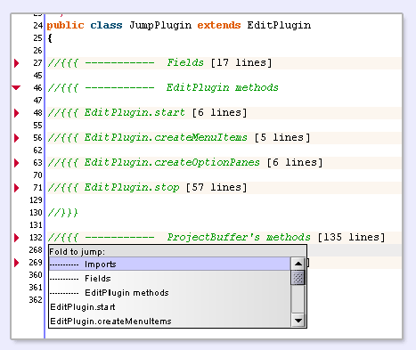

Jump! work in collaborate with "ProjectViewer" plugin and with "Exuberant Ctags" (ctags.sourceforge.net). It provide several actions which, I hope, accelerate your work with jEdit. First of all, you must indicate path to ctags executable (see Jump! options).
When you execute one of Jump actions for the first time, then ctags parse all files of current project and create tag file. It may take some time, depending on number of files in project.
Show list of all files found in current project.
You may freely navigate through tags here. Press Enter or Space on list item to jump to desired file. This list also provide incremental navigation, pressing PageUP, PageDOWN, HOME, END are also valid.
Holding the Shift key while pressing Enter (Space or MouseClick) - will open desired file in the new View.
Shows a list of all tags found in current file.
Navigation rules as in Jump to file action, plus pressing INSERT (as well as Ctrl+CLICK) - will insert picked tag into current caret position.
Show list of files where desired tag is found.
First of all, move the caret to desired tag, for example:
public final TextAreaPainter get*Painter() (* - caret)
When you invoke the "Search Tag" action, you will see a list of all files (within the current project) where the desired tag is found. Hold the shift key to open the tag in a new Buffer. All your jumpings are stored in a history (see Jump Back action section), each adds itself to the "Type a Tag" list (see Type a Tag).
See statusbar messages for additional information on the current tag.
Displays an input dialog to type a tag to search.
Here, you can manually type a tag, indicating where you want to jump.
All tags you typed earlier are stored in the history and available. Press UP or DOWN to page through previous entered tags.
After several "search tag" jumpings, you may want to revisit tags you had visited before.
Shows list of folds found in current buffer.
I like folds. Usualy I use the explicit mode folding. Take a look:
This action does not depend on ProjectViewer's project. Even if you switch Enable Jump to off - this action will work. Also, in Options you can choose to sort this list, or not.
See Options - Jump, where you can test ctags setup. This test works like: ctags.exe "user.home/.jedit/properties" >> null, just for setup test purpose.
Also, if something goes wrong (mail me!!!) as workaround - try to delete the projectviewer/<projectname>.jump file. Jump automatically creates a new one as needed, so you don't even need to restart jEdit.
Jump! stores tag file at non-typical manner. Instead of store ctags output, it serializes the data to a CTAGS_Buffer object, which, I hope, is comfortable for any purposes. It saves the tag file into a file called projectviewer/<projectname>.jump. If you want to use this file, try CTAGS_BG.loadBuffer(String filename).
Mail me if you have some suggestions or advice.
The preferred way to send bug reports or feature requests is to use the Sourceforge Bug Tracker. For discussions, you have your choice of places to write to:
Thanks jEdit dev. team for excellent editor, Jext dev. team (especially BlaisorBlade) for great help and patience.
Thanks to Marcelo Vanzin for updating Jump to the current ProjectViewer.